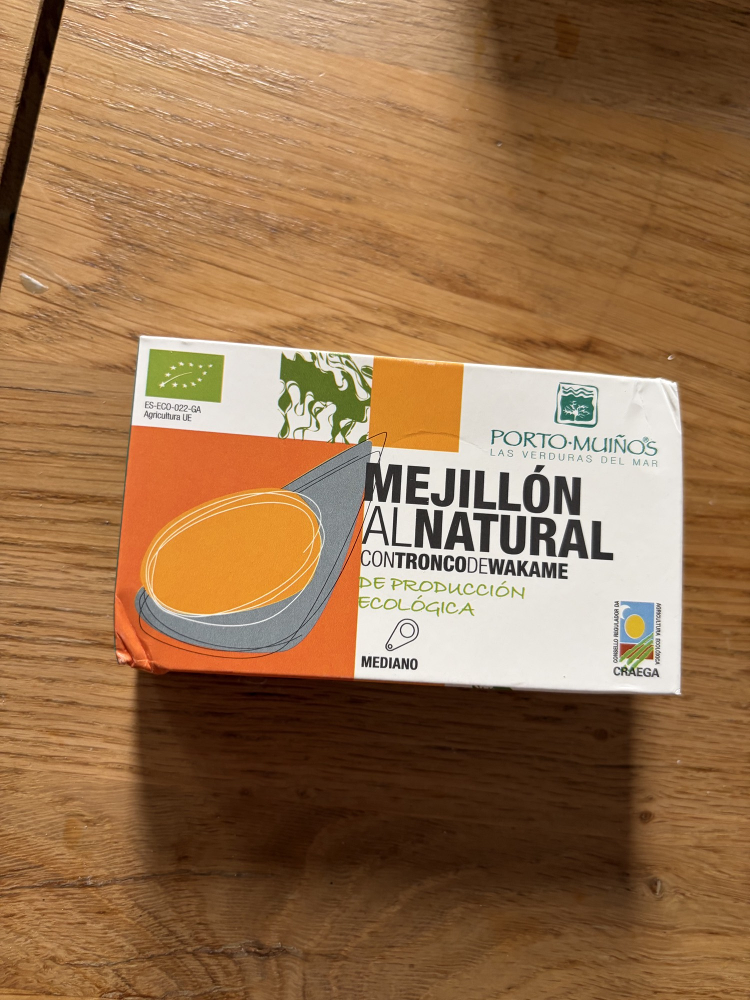

Herpac — икра макрели
Икра атлантической скумбрии в оливковом масле. Солёная, кремовая, нежная.
Что это такое
Икряные мешочки атлантической скумбрии (Scomber colias), собранные в разгар сезона, когда мешочки полные, но еще не разрушаются. Деликатес в испанской консервационной культуре, который находится где-то между тарамой и свежей боттаргой. Herpac упаковывает их целиком в оливковом масле первого отжима (EVOO), чтобы сохранить хрупкую мембрану. Показатели качества: целые мешочки, бледно-оранжево-розовый цвет, отсутствие сернистого запаха, масло остается прозрачным.
Пищевая ценность
На 100 г (с маслом):
- Калории: ~190–230 ккал
- Белки: 14–18 г
- Жиры: 14–17 г (значительный вклад от фосфолипидов икры и масла)
- Омега-3: ~1.0–1.5 г
- Холин, B12, йод: очень высокие
- Натрий: ~400–500 мг
Приготовление и подача
Эти икры деликатные. Открывайте осторожно, чтобы не проколоть мешочки. Подавайте слегка охлажденными — 12°C/54°F — чтобы масло было густым, но не мутным. Икру можно представить целиком как "герой" элемента, или аккуратно разделить ложкой, чтобы показать гранулированный внутренний слой. Используйте масло для украшения тарелки. Не промывать. Не нагревать. Нагрев приведет к разрыву мембраны и заставит икру выделять сок, превращая ее в песчаную массу.
Традиционный и современный контекст употребления
В Кадисе и Уэльве huevas de caballa едят просто: мешочек на тарелке с хлебом и холодным tinto de verano. Для изысканной подачи положите одну или два целых мешочка на человека рядом с намазкой из взбитого соленого трескового бренда или на основе тонко нарезанного, поджаренного бриоша с маслом.
Вкус и текстура
Мембрана нежная и хрустящая, уступая место массе мелких, отдельных икринок, которые меньше и более деликатные, чем икра лосося. Текстура кремовая и гранулированная, почти как мелкая полента. Вкус солоноватый на первом плане, затем отчетливо печеночный — минеральный, с ноткой йода и легкой горечью, которая воспринимается как изысканность, а не порча. Оливковое масло смягчает послевкусие, придавая ему почти ореховый оттенок.
Сочетания и состав
- Вина: Фино херес, хрустящий Альбариньо или молодой Годельо
- Хлеб: Легко поджаренный бриош или pan de cristal
- Кислоты: Цедра лимона (не сок), маринованный шалот, ягоды каперсов
- Идея блюда: Huevas sobre crema de puerros — один целый мешочек икры, лежащий на теплой (не горячей) крем-супе из лука-порея, завершенный упаковочным маслом, микрогречкой и нитью уменьшенного Педро Хименеса.